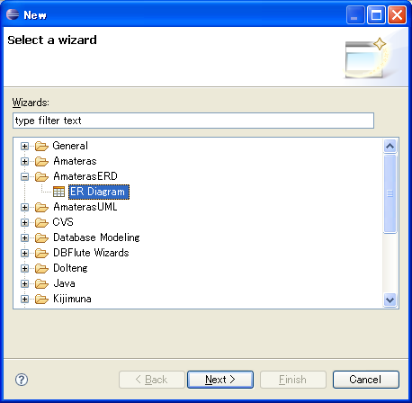
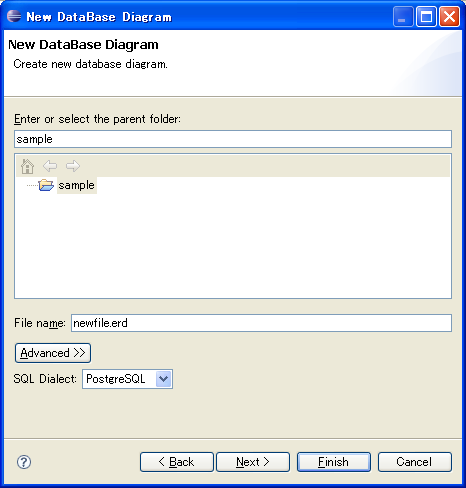
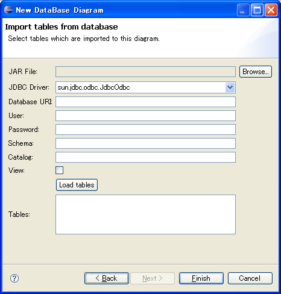

Creating Diagram
Creating New Diagram
[File] > [New] > [Other...] > [AmaterasERD] > [ER Diagram]

Input a filename (*.erd) and choose SQL dialect.

You can generate a ER diagram from an existing database.
